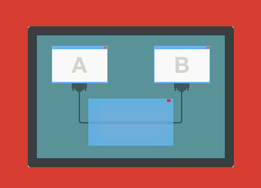

We deliver exquisite software solutions for Windows
Share and access USB devices over Ethernet
USB Network GateEasily connect one or multiple remote USB devices to your computer over Ethernet and use them as if the device was plugged into your own machine.
Share Serial port devices over Ethernet
Serial to Ethernet ConnectorShare serial port over network (Internet or LAN), access COM ports remotely and emulate COM ports over TCP/IP Network.
Monitor and analyze COM port activity
Serial Port MonitorCreate virtual COM port pairs
Virtual Serial Port Driver Manage remote USB and COM port devices
FlexiHubAccess any USB or Serial port device over network, no matter how far it is.